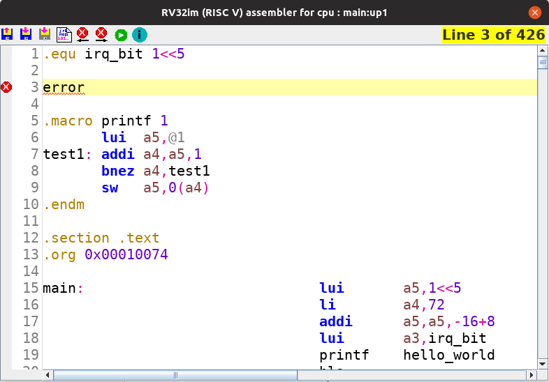

简介
Logisim-evolution 内置的汇编器除了支持所选处理器提供的指令外，还支持本帮助页面中描述的若干功能。汇编器提供语法高亮和错误检测，并会将指令转换为处理器可执行的机器码。尽管汇编器的结构允许输出 ELF 文件，但此功能尚未实现。
使用 GUI
打开汇编器时，会显示一个新窗口，如下所示：

该图形界面由三个部分组成：
- 位于编辑区域顶部的工具栏。
- 编辑区域左侧带有错误指示器的行指示栏。
- 编辑区域。
工具栏
工具栏通过若干图标提供汇编器的主要功能：
此图标用于将汇编文件加载到编辑区域。加载功能也可通过键盘快捷键（Ctrl-L）激活。
此图标用于保存编辑区域中的当前内容。保存功能也可通过键盘快捷键（Ctrl-S）激活。
此图标用于将编辑区域中的当前内容另存为。另存为功能没有键盘快捷键。
此图标用于对编辑区域中的当前内容执行汇编功能。汇编功能也可通过键盘快捷键（ALT-A）激活。
此图标跳转到当前光标位置之前检测到的错误。此功能也可通过键盘快捷键（Ctrl-P）使用。
此图标跳转到当前光标位置之后检测到的错误。此功能也可通过键盘快捷键（Ctrl-N）使用。
此图标激活汇编功能，并在未检测到错误时将程序加载到存储器中。运行功能也可以通过键盘快捷键（ALT-R）激活。
此图标用于显示本帮助页面。
工具栏右侧显示光标当前行以及编辑区域的总行数。如果此指示器亮起黄色，则表示在编辑区域中检测到更改。
行指示栏
行指示栏除了显示当前行号外，还包含错误指示图标。将鼠标悬停在错误指示栏上，会显示编辑区域中该行检测到的一个错误。
编辑区域
编辑区域包含要汇编的代码。如果代码包含错误（在激活汇编或运行功能后），错误将通过行指示栏中的错误图标以及问题文本下方的红色波浪线显示。将鼠标悬停在此文本上会显示错误原因。需要注意的是，当一行中存在多个错误时，行指示栏中的错误标记只会显示其中一个。此外，对于计算（如上图所示第 17 行），可能只标记数字 8，而不是整个表达式。
使用计算
汇编器支持两种类型的计算：
- 程序计数器（PC）相对计算
- 绝对计算
程序计数器相对计算
如果需要相对于当前程序计数器的地址，可以使用保留寄存器 pc 执行这些计算。在这些计算中也可以使用标签和常量。
示例：pc+8、pc-0x40、mylabel-pc等。
绝对计算
绝对计算会得到一个常量值。执行绝对计算时，可以使用标签和常量。
计算类型
支持以下计算类型：
- + => 加法
- - => 减法
- * => 乘法
- / => 整数除法
- % => 整数取余
- << => 左移
- >> => 右移
计算顺序
重要： 目前计算按从左到右的顺序进行，与运算符的优先级无关！
这意味着：
5+10*2 的计算结果为 (5+10)*2 = 30
10*2+5 的计算结果为 (10*2)+5 = 25
改进这种基础的计算支持已在待办列表中。
使用宏
内置汇编器支持宏。宏的语法如下：
.macro <名称> <变量数量>
<主体>
.endm
宏定义需要两个参数：
- <name> 此参数是将在程序其余部分使用的宏的名称。
- <nr_of_variables> 此参数指定宏内部使用的变量数量。此参数应为非负整数（例如 0、1、2……）。
宏内允许的构造
在宏内部，只能使用指令、标签、计算以及对其他宏的调用。需要注意的是，在宏的 <BODY> 内部定义的标签是宏的局部标签，不能在宏外部引用。
在宏内使用变量
如果参数 <nr_of_variables> 是大于 0 的数字，则必须使用此数量的值来调用宏。每个值都可以在宏内部通过指示符 @<x> 引用，其中 <x> 是一个数字。因此 @1 引用参数 1，@2 引用参数 2，依此类推。
在宏内使用宏调用
宏允许调用其他宏，但有两个限制：
- 宏不能调用自身；不支持递归宏。
- 两个宏不能相互调用；不支持循环调用。
汇编器指令
支持以下几种指令，如下所述。
标签
标签可以使用语法 <name>:。<name> 必须以字母开头，并且可以包含字母（a..z；A..Z）、数字（0..9）和下划线（_）。请注意，在宏内部指定的标签是宏的局部标签。所有其他标签都是全局的（因此全局标签可以在宏内部引用）。
命名常量
命名常量可以通过语法 .equ <name> <value> 定义。<name> 参数必须以字母开头，并且可以包含字母（a..z；A..Z）、数字（0..9）和下划线（_）。<value> 字段可以包含数字或计算。
节
可以使用 .section <name> 将程序划分为多个节。<name> 参数必须以字母开头，并且可以包含字母（a..z；A..Z）、数字（0..9）和下划线（_）。有四个预定义的节名称：.text、.data、.rodata、.bss。这些节名称不需要在前面加上 .section 关键字。
注释
注释可以通过在其前面放置 # 来支持，并一直延伸到行尾。多行注释可以通过在每行前面放置 # 来实现。
字符串
可以通过 .string "<str>"、.ascii "<str>" 或 .asciz "<str>" 指定字符串。<str> 可以包含任意内容，并且可以跨越多行。可以使用以下转义码：
- \n -> 插入换行符。
- \" -> 插入双引号。
- \t -> 插入制表符。
- \r -> 插入回车符。
- \f -> 插入换页符。
- \\ -> 插入反斜杠。
.string 和 .asciz 都会在字符串末尾自动插入一个零字符。
存储器地址
默认情况下，汇编器将从存储器地址 0x00000000 开始。要更改当前存储器地址，可以使用 .org <address> 指令，其中 <address> 是 32 位地址空间内的一个值。注意： 汇编器仅检查段间重叠。如果在段内指定的地址已被占用，则值将被覆盖。
常量
有多种方法可以用常量值填充存储器。除了基于字节的方式外，其他所有方式都使用小端存储方法，即最低有效字节存储在最低存储器地址，最高有效字节存储在最高存储器地址。支持的指令有：
- .byte <value1>[,<value2>,...] 该指令将值解释为字节，一个接一个地存储到存储器中。
-
.half <value1>[,<value2>,...]
.2byte <value1>[,<value2>,...]
.short <value1>[,<value2>,...] 这些指令将值解释为 16 位值，一个接一个地存储到存储器中。 -
.word <value1>[,<value2>,...]
.4byte <value1>[,<value2>,...]
.long <value1>[,<value2>,...] 这些指令将值解释为 32 位值，一个接一个地存储到存储器中。 -
.dword <value1>[,<value2>,...]
.8byte <value1>[,<value2>,...]
.quad <value1>[,<value2>,...] 这些指令将值解释为 64 位值，一个接一个地存储到存储器中。